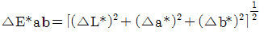
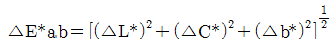
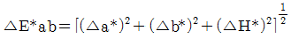
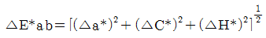
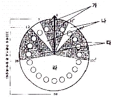

컬러리스트기사 (2014-08-17 기출문제)
1과목: 색채심리 마케팅
1. 나라별 색채선호 및 특징에 대한 설명이 틀린 것은?
- 한국의 전통색은 자연과 우주의 원리에 순응하려는 노력이 오방정색과 오방간색으로 표현되었다.
- 인도인들은 빨간색이 생명과 영광을, 녹색이 평화와 희망을 상징한다고 믿는다.
- 태국인들은 각 요일의 색채가 전통적으로 제정되어있어 일요일은 빨간색, 월요일은 노란색 등으로 정하고 있다.
- 이스라엘에서는 하늘색을 불길한 색으로 여기고 극단적인 경우 혐오감까지 느낀다고 한다.
(정답률: 92%)
2. 외부지향적 소비자에게 있어서 가장 중요한 사항은?
- 기능성
- 경제성
- 소속감
- 심미감
(정답률: 78%)

3. 마케팅에 관한 설명 중 옳은 것은?
- 마케팅이란 자기 회사 제품의 실태를 파악하는 것을 말한다.
- 산업 제품이 생산자로부터 소비자까지 전달되는 모든 과정과 관련된다.
- 시대에 다른 유행이나 스타일과는 관계가 없다.
- 산업 제품을 대량생산 하는 것을 마케팅이라고 한다.
(정답률: 100%)
4. 색채조사 자료의 분석을 위한 통계분석에는 다양한 기술통계분석이 활용된다. 다음의 설명 중 틀린 것은?
- 특징화시키거나 요약시키는 지수를 추출하기 위한 가장 단순한 방법은 빈도분포, 집중경향치, 퍼센트 등이 있다.
- 모집단에 어떤 인자들이 있는지 추출하는 방법을 요인분석이라 한다.
- 어떤 집단의 요소를 다차원공간에서 요소의 분포로부터 유사한 것을 모아 군으로 정리하는 것을 군집분석이라 한다.
- 인자들의 숫자를 줄여 단순화하는 것을 판별분석이라 한다.
(정답률: 58%)
5. 제품 포지셔닝의 방법 중 예매하고 모호한 제품 효익(笅益)을 근거로 제시하는 것은?
- 일반적 포지셔닝
- 구체적 포지셔닝
- 정보 포지셔닝
- 심상 포지셔닝
(정답률: 17%)
6. 색채의 지각과 감정효과에 대한 설명 중 틀린 것은?
- 더운 방의 환경색을 차가운 계통의 색으로 하였다.
- 지나치게 낮은 천장에 밝고 차가운 색을 칠하면 천장이 높아 보인다.
- 자동차의 외관을 차갑고 부드러운 색 계통으로 칠하면 눈에 잘 띄므로 안전을 기할 수 있다.
- 실내의 환경색은 천장을 가장 밝게 하고 중간 부분을 윗벽보다 어둡게 하며 바닥은 그 보다 어둡게 해야 안정감을 느낄 수 있다.
(정답률: 95%)
7. 색채의 사회적 역할에 관한 설명 중 틀린 것은?
- 특정한 사회에서 통용되는 색에 대한 고정관념은 다를 수 있다.
- 사회가 고정되고 개인의 독립성이 뒤쳐진 사회에서는 색채가 다양하고 화려해지는 경향이 있다.
- 사회의 관습이나 권력에서 탈피하면 부수적으로 관련된 색채연상이나 색채금기로부터 자유로워질 수 있다.
- 사회 안에서 선택되는 색채의 선호도는 성별에 따른 차이뿐만 아니라 연령별로 다르게 나타난다.
(정답률: 95%)
8. 색채마케팅 전략 수집 단계 중 자료의 수집에 관한 설명이 옳은 것은?
- 1단계로 먼저 경쟁관계에 있는 브랜드의 매출, 제품 디자인, 마케팅 전략의 변화추이를 파악하여 포지셔닝을 분석한다.
- 2단계로 자사 브랜드를 중심으로 사회, 문화, 소비자의 라이프스타일 등의 동향을 파악하고 키워드를 도출하고 이미지 매핑을 한다.
- 3단계로 과거 몇 시즌 동안 나타났던 디자인 트렌드의 변화 추이를 분석하여 미래에 나타나게 될 트렌드를 예측한다.
- 4단계로 글로벌마켓에 출시하게 될 상품인 경우 전 세계 공통적 색채 환경을 사전 조사한다.
(정답률: 23%)
9. 색의 심리적 효과에 대한 설명이 틀린 것은?
- 빨간 조명 아래에서는 시간이 실제보다 길게 느껴진다.
- 초록 조명 아래에서는 문지방의 높이가 평소보다 높아 보인다.
- 빨간 조명 아래에서는 물건이 더 무겁게 느껴진다.
- 빨강이나 노란색과 같은 장파장 색은 단파장색보다 가깝게 보인다.
(정답률: 73%)
10. 색채의 심리적 의미의 대응이 아닌 것은?
- 난색 - 달
- 한색 - 진정
- 난색 - 침착
- 한색 - 활동
(정답률: 48%)
11. 소비자 생활유형에 따른 색채반을 유형에 대한 설명 중 틀린 것은?
- 색에 민감하여 최신 유행색에 관심이 많으며 적극적인 구매활동을 하면 컬러 포워드(Color Forward) 유형이라고 부른다.
- 컬러 프루던트(Color Prudent)유형은 신중하게 색을 선택하고 트렌드를 따르며 충동적 소비를 하지 않는다.
- 선호하는 색과 소비하는 색이 고정적인 컬러 로열(Color Royal) 유형은 유행색에 민감하게 반응한다.
- 컬러 프루던트(Color Prudent)유형은 색채의 다양성과 변화를 거부하지는 않지만 주도적으로 변화를 이끌어내지는 않는다.
(정답률: 85%)
12. 국제언어로서의 색에 대한 연상이 틀린 것은?
- 노랑 - 장애물 또는 위험물의 경고
- 빨강 - 소방기구
- 녹색 - 구급장비, 상비약
- 파랑 - 수위 조절 및 안전지역
(정답률: 89%)
13. 디자인 마케팅 전략의 우선 사항이 아닌 것은?
- 시장의 문화적 특성을 고려한다.
- 시장의 사회적 측면을 고려한다.
- 시장 세분화에 대한 조사를 실시한다.
- 시장의 언어적, 심리적 측면을 고려한다.
(정답률: 48%)
14. 마케팅 전략으로 기업의 이미지를 시각적 통일화 작업을 통해 일관성 있게 관리하는 것은?
- MD(Merchandising)
- CO(Corporate Culture)
- CI(Corporate ldentity)
- VP(Visual Point)
(정답률: 80%)
15. 경영전략의 하나로 상표 이미지를 시각적으로 체계화, 단순화하여 소비자에게 인식시키고 체계적인 관리를 통해 특정 브랜드에 대한 선호도를 향상시키는 것은?
- Brand Model
- Brand Royalty
- Brand lmage
- Brand ldentity
(정답률: 85%)
16. 다음 중 유행색에 관한 설명으로 틀린 것은?
- 유행색은 어떤 시기에 집중해서 시장을 점유한 상품색을 가리킨다.
- 유행색을 특징짓는 것은 발생ㆍ성장ㆍ쇠퇴의 사이클을 갖는 유동성이다.
- 젊은 연령층에서 유행색은 특징적으로 나타나는 경향이 있다.
- 귀속의식이 강한 집단일수록 유행색의 전파는 느리지만 그 수명은 길다.
(정답률: 85%)
17. 일반적으로 사용되는 시장세분화의 기준으로 지리적, 인구통계적, 심리분석적, 행동분석적 변수들이 있는데 이 중 인구통계적 변수에 포함되지 않는 것은?
- 나이
- 가족규모
- 소득
- 상표 충성도
(정답률: 73%)
18. 행동 모형으로 얻는 하워드 쉐즈 모형이 아닌 것은?
- 생산변수
- 투입변수
- 산출변수
- 외생변수
(정답률: 22%)
19. 다음 중 마케팅 전략에 활용할 수 있는 소비자 행동요인과 가장 거리가 먼 것은?
- 주거집단
- 주거지역
- 수익성
- 소득수준
(정답률: 77%)
20. 색견본이나 색이름을 열거해서 마음에 떠오르는 단어를 자유롭게 답하는 조사방법은?
- 자유연상법
- 순서연상법
- 대상연상법
- 체계연상법
(정답률: 83%)
2과목: 색채디자인
21. 아르누보에 대한 설명 중 틀린 것은?
- 담쟁이덩굴, 수선화 등의 장식문양을 즐겨 이용했다.
- 신예술이란 의미로 1890년경부터 20세기 초까지 일어났다.
- 역사적 양식에서 탈피해 새로운 조형미 창조에 도전하였다.
- 영국에서 시작되었으며 프랑스에서는 유겐트 스틸이라 칭하였다.
(정답률: 77%)
22. 바우하우스에 대한 설명이 틀린 것은?
- 1919년 월터 그로피우스를 중심으로 독일 바이마르에 설립된 조형학교이다.
- 독일공작연맹의 이념을 계승하여 예술 창작과 공학적 기술의 통합을 목표로 하여 교육하였다.
- 개성을 배제하고 자연으로부터 탈피하여 인가의 정신 속에서 영감을 찾는 조형이론을 강조하였다.
- 현대건축, 회화, 조각, 디자인 운동에 결정적인 영향을 주었다.
(정답률: 96%)
23. 다음 중 디자인의 기능과 거리가 먼 것은?
- 디자인은 생산과 소비의 가치를 부여한다.
- 디자인은 사회적 차별을 형성한다.
- 디자인은 커뮤니케이션의 수단이다.
- 디자인은 경제적 가치를 생성한다.
(정답률: 100%)
24. 플럭서스(Fluxus)에 대한 설명이 틀린 것은?
- 흐름, 끊임없는 변화, 움직임을 뜻하는 라틴어
- 1960년대에서 1970년대 독일의 여러 도시를 중심으로 일어난 국제적 전위 예술운동
- 최소한의 예술로 단순한 기하학적 형태를 사용했으며, 이미지와 조형요소를 최소화하여 부분이 아닌 전체를 강조
- 구속되지 않는 자유로운 집단의 활동을 의미하며 전반적으로 회색조에 어두운 색조가 주를 이룸
(정답률: 53%)
25. 멀티미디어디자인 영역의 설명으로 틀린 것은?
- 웹디자인 : 웹이란 웹브라우저와 인터넷망을 이요해서 볼 수 있는 콘텐츠를 말하고 이를 디자인하는 것을 말한다.
- 영상디자인 : 넓은 의미에서 영상디자인은 영화, 모션그래픽, 애니메이션 등을 총칭한다.
- 모바일 콘텐츠 디자인 : 휴대전화 등에서 볼 수 있는 웹 사이트, 사진, 음향, 동영상 등과 모바일 어플리케이션 등을 디자인한다.
- 사용자 인터페이스 디자인 : 가상현실 디자인이라고도 하며 실제 존재하지 않거나 사람이 체험하기 힘든 것을 컴퓨터를 이용하여 인공적으로 만들어내는 것을 말한다.
(정답률: 79%)
26. 단순한 선, 면, 색, 기호를 사용하여 어떤 특정 정보를 쉽게 이해할 수 있도록 구체화하여 설명하는 그림은?
- 픽토그램
- 다이어그램
- 일러스트레이션
- 타이포그래피
(정답률: 25%)
27. 메이크업과 빛의 관계에 대한 설명이 틀린 것은?
- 백열등 아래에서는 붉은색의 볼연지가 더욱 혈색있게 보인다.
- 메이크업은 조명이 색온도에 영향을 받으므로 적합한 색상을 고려한다.
- 형광등 아래에서는 붉은색이 함유된 파운데이션과 볼연지로 혈색을 살려준다.
- 메이크업은 개인의 피부색에 따라 다르므로 조명에는 크게 영향을 받지 않는다.
(정답률: 83%)
28. 다음 중 디자인의 조형 활동을 평가하기 위한 요건과 거리가 가장 먼 것은?
- 디자인의 유기성
- 디자인의 경제성
- 디자인의 합리성
- 디자인의 질서성
(정답률: 37%)
29. 건축양식, 기둥형태 등의 뜻 혹은 제품디자인의 외관형성에 채용하는 것으로 시대와 지역에 따라 유행하는 특정한 양식으로 말하기도 하는 용어는?
- Trend
- Style
- Fashion
- Design
(정답률: 34%)
30. 빅터 파파넥의 복합 기능이 포함하고 있는 내용과 관계가 먼 것은?
- 방법
- 필요성
- 경제성
- 연상
(정답률: 48%)
31. 색체를 표현의 도구 뿐 아니라 주제의 이미지로도 삼은 디자인 사조는?
- 다다이즘(Dadaism)
- 야수파(Fauvism)
- 큐비즘(Cubism)
- 아르누보(Art Nouveau)
(정답률: 39%)
32. 모든 디자인에서 대칭, 비대칭, 주도, 종속의 개념을 이용하여 시각적으로 안정감을 주기 위한 원리는?
- 통일의 원리
- 대비 조화의 원리
- 운동의 원리
- 균형의 원리
(정답률: 86%)
33. 다음에 사용된 색 중 가장 적절하지 않은 것은?
- 고속철도의 외부색으로 고명도의 색을 사용했다.
- 공장의 대형 기계에 저명도의 색을 적용하였다.
- 가을 패션의 주조색으로 갈색(브라운)을 사용하였다.
- 소파 위의 쿠션에 강한 원색을 사용하였다.
(정답률: 59%)
34. 1960년대 미국에서 시작된 것으로 캔버스에 그려진 회화예술이 미술관, 화랑으로부터 규모가 큰 옥외 공간, 거리나 도시의 벽면에 등장한 것은?
- 크래프트
- 슈퍼그래픽
- 퓨전디자인
- 옵티컬아트
(정답률: 86%)
35. 디스플레이 디자인(Display Design)의 색채 적용에 대한 설명 중 틀린 것은?
- 배치할 문건의 색채에 규칙을 주어 사람의 시선을 유도하도록 한다.
- 디스플레이의 주제에 가장 적합한 색을 주조색으로 한다.
- 상업 공간용 디스플레이의 P.O.P.는 주변 제품을 고려하여 유사한 색조로 디자인 한다.
- 조명을 고려하여 물건의 색채 배치를 변경한다.
(정답률: 85%)
36. 유니버설디자인의 7원칙에 해당되지 않는 것은?
- 누구라도 사용할 수 있고, 손에 넣을 수 있는 것
- 적은 노력으로 효율적으로, 편하게 사용할 수 있을 것
- 실수를 하면 중대한 결과가 초래되도록 할 것
- 접근하고 사용하는데 적절한 공간이 있을 것
(정답률: 100%)
37. 상품 색채 계획을 할 때 고려해야 할 사항이 아닌 것은?
- 인간의 후각 반응에 의한 조화
- 재료 기술, 생산 기술을 반영
- 색채와 형태의 이미지 조화
- 유행 정보 등 유행색이 해당 제품에 끼치는 영향
(정답률: 89%)
38. 실내디자인에 대한 설명으로 틀린 것은?
- 건물의 내부에서 사람과 물체와 공간의 관계를 다루는 디자인이다.
- 인간 기본생활에 밀접한 부분인 만큼 인간적 스케일로 취급되어야 한다.
- 선박, 자동차, 기차, 여객기 등의 운송기기 내부를 다루는 특별한 영역도 포함된다.
- 20세기에 들어서면서 건축물의 실내를 구조의 주체와 분리하여 내장한다는 의미를 지닌다.
(정답률: 49%)
39. 다음 중 성격이 다른 디자인 용어는?
- 지속 가능한 디자인(Sustainable Design)
- 어드밴스 디자인(Advanced Design)
- 업 사이클 디자인(Up-cycle Design)
- 에코디자인(Eco Design)
(정답률: 83%)
40. 처음 점이 움직임을 시작한 위치에서 끝나는 위치까지의 거리를 가진 점의 궤적은?
- 점
- 선
- 면
- 입체
(정답률: 95%)
3과목: 색채관리
41. 모니터의 밝기 측정 단위는?
- 조도
- 휘도
- 광도
- 전광선속
(정답률: 32%)
42. 색채관측을 위한 조명 환경으로 적합하지 않은 것은?
- 연색지수 92, 색온도 5000K, 200 cd/m
- 연색지수 98, 색온도 1200K, 150 cd/m
- 연색지수 85, 색온도 7000K, 180 cd/m
- 흐린 날 2시경 북쪽 창문 아래
(정답률: 41%)
43. CCM(Computer Color Matching)조색의 특징이 아닌 것은?
- 광원이 바뀌어도 색채가 일치하는 무조건 등색을 할 수 있다.
- 발색에 소요되는 비용을 정확히 산출할 수 있으며 경제적이다.
- 재질과는 무관하므로 기본재질이 변해도 데이터를 새로 입력할 필요가 없다.
- 자동 배색 시 각종 요인들에 의하여 색채가 변할 수 있으므로 발색공정에 대한 정확한 파악과 철저한 관리가 선행되어야 한다.
(정답률: 77%)
44. 플라스틱 착색으로는 어떤 것이 가장 좋은가?
- 천연염료
- 유기안료
- 합성수지도료
- 천연수지도료
(정답률: 62%)
45. 곡선의 모양을 수학적 알고리즘으로 표현해 그래픽 구성이 간단하며 사이즈도 상대적으로 적어 3차원 게임이나 애니메이션 등에서 사용되는 영상기술은?
- 래스터영상
- 모션캡처
- 그리드영상
- 벡터그래픽
(정답률: 64%)
46. 분고아광도계(spectrophotometer)를 이용하여 측정한 삼자극치 XYZ값 중 Y값의 단위로 옳은 것은?
- cd/m
- 단위 없음
- Lux
- Watt
(정답률: 54%)
47. 다음 중 안료의 특징으로 옳은 것은?
- 채색 후에 물이나 습기에 노출되면 색이 보존되지 않는다.
- 물이나 착색과정의 용제(溶制)에 의해 단일분자로 녹는다.
- 착색하고자 하는 매질에 용해되지 않는다.
- 피염제의 종류, 색료의 종류, 흡착력 등에 따라 착색 방법이 달라진다.
(정답률: 58%)
48. 측색결과 표기에 해당되지 않는 것은?
- 측정방식
- 표준관측자
- 표준광
- 색차
(정답률: 84%)
49. 색료에 대한 설명으로 틀린 것은?
- 유기 안료는 무기 안료에 비해 빛깔이 선명하다.
- 안료는 유기 용제에 녹지 않은 분말 상태의 착색제를 말한다.
- 색료를 선택할 때에는 착색의 견뢰성을 고려하여야 한다.
- 염료는 고체 물질의 표면에 칠해서 고체 막을 만들어 색을 표현한다.
(정답률: 75%)
50. 광원의 변화에 따라 색이 다르게 보이는 정도를 나타내는 것은?
- CII
- CIE
- MI
- YI
(정답률: 53%)
51. 육안으로 색을 비교할 때의 주의사항이 틀린 것은?
- 관찰자는 선명한 색의 옷을 피해야 한다.
- 여러 색채를 검사하는 경우 계속 검사를 피한다.
- 초록색을 비교한 경우 노락색을 바로 비교해서는 안 된다.
- 높은 채도의 색을 검사한 다음 낮은 채도의 색을 검사한다.
(정답률: 80%)
52. 색채측정기의 구조에 따라 형광색을 측정할 수 있는 장비와 측정할 수 없는 장비가 있다. 다음 중 형광색을 측정할 수 있는 장비는?
- 이중 빛살 방식 분광광도계(dual beam type spectrophotometer)
- 필터식 색채계(filter type colorimeter)
- 전방 장식 분광광도계(monochromatic spectrophotometer)
- 후방 방식 분광광도계(polychromatic spectrophotometer)
(정답률: 63%)
53. CIE Lab와 CIE LCH 색체계에서 색차식을 나타내는 계산식 중 옳은 것은?




(정답률: 80%)
54. 육안조색 시 필요한 도구로 옳은 것은?
- 측색기, 어플리케이터, CCM, 측정지
- 표준광원, 어플리케이터, 스포이드, 믹서
- 표준광원, 소프트웨어, 믹서, 스포이드
- 은폐율지, 측색기, 믹서, CCM
(정답률: 90%)
55. 광택에 관한 설명 중 옳은 것은?
- 광택은 물체표면의 빛을 난반사하는 경우에만 생긴다.
- 광택에는 질과 량이 없다.
- 광택은 그 보는 방향에 따라 질감의 차이를 표현 할 수 있다.
- 광택이 있는 색체는 오스트발트 색채값으로 표현해야 한다.
(정답률: 79%)
56. 외부에서 입사하는 빛을 선택적으로 흡수하여 고유의 색을 띠게 하는 빛은?
- 감마선
- 자외선
- 적외선
- 가시광선
(정답률: 97%)
57. 다음 중 형광을 포함한 분광반사율을 측정하는 방법이 아닌 것은?
- 형광증백법
- 필터 감소법
- 이중 모드법
- 이중 모노크로메이터법
(정답률: 48%)
58. 포토샵 등의 영상 및 색체 처리 관련 프로그램에서 주어진 영상의 크기가 작아 영상의 크기를 키울 때 격자가 생겨 계단현상이 생기는 것을 방지하기 위해 사용하는 기술은?
- 저주파 필터링(low-pass filterning)
- 샤프닝(Sharpening)
- 보간법(interpolation)
- 겹침(overlapping)
(정답률: 53%)
59. CCM을 도입하는 목적에 대한 설명으로 옳은 것은?
- 색채 혼색과 주색을 구별하기 위하여
- 무조건등색을 실현하기 위하여
- 백색광원의 변화를 구별하기 위하여
- 색채 선호도를 계산하기 위하여
(정답률: 65%)
60. 장치의존(divice dependent) 색채계를 옳게 설명한 것은?
- 색좌표가 해당 장치 내에서도 재현성 있게 구현되지 않는다.
- 색채구현장치에 따라 색채의 좌표 값이 달라진다.
- 인가의 색채시감을 바탕으로 이루어진 색채계이다.
- 같은 장치 내에서는 장치의 설정을 어떻게 바꾼다하더라도 색좌표에 대한 일괄된 색채가 유지된다.
(정답률: 75%)
4과목: 색채지각론
61. 파란색 선글라스를 착용하고 붉은 물체를 바라보는 경우, 처음에는 물체가 푸르게 보이나 일정 시간이 지나면 다시 본래 물체의 색을 느끼게 되는 현상은?
- 명순응
- 색순응
- 암순응
- 기억색
(정답률: 87%)
62. 색에 관한 설명 중 틀린 것은?
- 회색은 명도의 속성만 가지고 있다.
- 검정색이 많이 섞일수록 채도가 낮아진다.
- 빨간색은 색상, 명도와 채도의 3속성을 모두 가지고 있다.
- 흰색이 많이 섞일수록 채도가 높아진다.
(정답률: 96%)
63. 색자극의 순도가 변하면 색상이 다르게 보인다는 색채지각효과는?
- 맥콜로 효과
- 애브니 효과
- 리프만 효과
- 베졸트 브뤼케 효과
(정답률: 79%)
64. 색채지각 효과 중 흑백 원반을 고속으로 회전시켰을 때 유채색이 어른거리는 현상으로 착시에서 오는 심리작용은?
- 벤함의 효과
- 허먼그리드 효과
- 맥콜로 효과
- 애브니 효과
(정답률: 74%)
65. 빨강과 회색을 나란히 붙여 놓을 때 빨강이 더욱 선명하게 보이는 현상은?
- 색상대비
- 명도대비
- 채도대비
- 연변대비
(정답률: 89%)
66. 다음 중 감법혼색의 원리에 의한 것이 아닌 것은?
- 컬러인쇄
- 색필터 겹침
- 물감에 의한 색 재현
- 여러 실로 직조된 직물
(정답률: 60%)
67. 때로는 차갑게, 때로는 따뜻하게 느껴질 수 있는 색을 중성색이라고 한다. 다음 중 중성색이 아닌 것은?
- 녹색
- 보라
- 자주
- 주황
(정답률: 90%)
68. 색채의 지각 효과와 관련하여 연결이 잘못된 것은?
- 명도가 낮은 색 - 수축되는 느낌
- 난색 계열 - 무거운 느낌
- 채도가 낮은 색 - 약한 느낌
- 한색 계열 - 딱딱한 느낌
(정답률: 73%)
69. 빛의 현상과 예가 올바르게 짝지어진 것은?
- 빛의 산란 - 무지개
- 빛의 굴절 - 곤충 날개의 색
- 빛의 굴절 - 구름
- 빛의 간섭 - 비눗방울의 색
(정답률: 67%)
70. 혼합할수록 명도가 높아지는 혼색을 위한 3원색은?
- Red, Yellow, Blue
- Cyan, Magenta, Yellow
- Red, Green, Blue
- Red, Blue, Magenta
(정답률: 83%)
71. 색의 잔상에 대한 설명으로 틀린 것은?
- 앞서 주어진 자극의 색이나 밝기, 공간적 배치에 의해 자극을 제거한 후에도 시각적인 상이 보이는 현상이다.
- 양성 잔상은 원래의 자극과 색이나 밝기가 같은 잔상을 말한다.
- 잔상은 원래 자극의 세기, 관찰시간, 크기에 의존하는데 음성 잔상보다 양성 잔상을 흔하게 경험하게 된다.
- 보색 잔상은 색이 선명하지 않고 질감도 달라 하늘색과 같은 면색처럼 지각된다.
(정답률: 73%)
72. 가시관선의 파장영역 중 단파장영역에 대한 설명으로 틀린 것은?
- 굴절율이 작다.
- 회절하기 어렵다.
- 산란하기 쉽다.
- 광원색은 파랑, 보라이다.
(정답률: 22%)
73. 동시대비에 관한 설명으로 옳은 것은?
- 색차가 클수록 대비현상은 약해진다.
- 자극과 자극 사이의 거리가 가까울수록 대비현상은 약해진다.
- 자극을 부여하는 크기가 클수록 대비의 효과가 커진다.
- 계속해서 한 곳을 보면 눈의 피로도 때문에 대비효과는 적어진다.
(정답률: 28%)
74. 푸르킨예 현상과 관련이 없는 것은?
- 간상체 시각과 추상체 시각의 스펙트럼 민감도가 서로 다르기 때문이다.
- 어두운 곳에서 명시도를 높이려면 녹색이나 파랑을 사용하는 것이 좋다.
- 어두운 곳에서는 추상체가 반응하지 않고, 간상체가 반응하면서 생기는 현상이다.
- 망막의 위치마다 추상체 시각의 민감도가 다르기 때문에 생기는 현상이다.
(정답률: 61%)
75. 밝은 곳에서 기능을 발휘하고 색의 식별에 관여하고 있는 시세포의 수는?
- 약 300만 개
- 약 600만 개
- 약 6500만 개
- 약 1얼 2천만 개
(정답률: 34%)
76. 두 색의 조합 중 본래의 색보다 채도가 높아 보이는 경우는?
- 5R 5/2 - 5R 5/12
- 5BG 5/8 - 5R 5/12
- 5Y 5/6 - 5YR 5/6
- 5Y 7/2 - 5Y 2/2
(정답률: 46%)
77. 색료의 3원색인 yellow와 magenta를 혼홥했을 때의 색은?
- green
- orange
- red
- brown
(정답률: 62%)
78. 다음 중 색채의 감정효과와 그 효과에 주로 영향을 주는 속성과의 연결이 틀린 것은?
- 경연감 - 채도, 명도
- 중량감 - 채도, 색상
- 온도감 - 색상, 명도
- 진출감 - 색상, 명도
(정답률: 74%)
79. 5P 4/10인 색을 광고판의 배경색으로 사용하였다. 멀리서도 문구를 잘 보이도록 하려면 다음 중 어떤 색이 가장 적합한가?
- 5R 4/14
- 5Y 8/14
- 5B 5/8
- N3
(정답률: 80%)
80. 순색 노랑의 포스터컬러에 회색을 섞었다. 회색의 밝기를 정확히 알지 못한다고 해도 혼합 후에 가장 명확하게 달라진 속성의 변화는?
- 명도가 높아졌다.
- 채도가 낮아졌다.
- 채도가 높아졌다.
- 명도가 낮아졌다.
(정답률: 64%)
5과목: 색채체계론
81. 색채표준에 대한 설명으로 옳은 것은?
- 반드시 3속성으로 표기한다.
- 색채의 속성을 정량적으로 표기한 것이다.
- 인간의 감성과 관련되므로 주관적일 수 있다.
- 집단고유의 표기나 특수문자를 사용할 수 있다.
(정답률: 73%)
82. 다음은 먼셀색체계의 색표기 방법에 따라 제시한 유채색들이다. 이 중 가장 비슷한 색의 쌍은?
- 2.5R 5/10, 10R 5/10
- 10YR 5/10, 2.5Y 5/10
- 10R 5/10, 2.5G 5/10
- 5Y 5/10, 5PB 5/10
(정답률: 61%)
83. CIE(국제 조명 위원회)에서 제시한 표준광원이 아닌 것은?
- 표준광 A
- 표준광 C
- 표준광 D
- 표준광 F
(정답률: 53%)
84. 문스펜서의 조화원리 중 등명도면에서 어떤 하나의 색상을 0의 위치에 두었을 때 “가”의 영역에 해당하는 것은?

- 제1부조화
- 제2부조화
- 유사조화
- 대비조화
(정답률: 34%)
85. 색의 잔상들이 색의 실제 이미지를 더 뚜렷하고 선명하게 보이게 하는 배색 방법은?
- 보색에 의한 배색
- 톤에 의한 배색
- 명도에 의한 배색
- 유사색상에 의한 배색
(정답률: 79%)
86. 오스트발트 색채조화원리 중 ec-ic-nc는 어떤 조화인가?
- 등순계열조화
- 등백계열조화
- 등흑계열조화
- 무채색의 조화
(정답률: 48%)
87. 색체표준화의 대상이 아닌 것은?
- 광원의 표준화
- 문체 반사율 측정의 표준화
- 다양한 색체계의 표준화
- 표준관측자의 3자극 효율함수 표준화
(정답률: 27%)
88. 색명법의 유용성에 대한 설명으로 옳은 것은?
- 색감의 연상이 즉각적이다.
- 정량적이고 객관적인 색 표시 방법이다.
- 지역별 연상 색감에 대한 오차가 적다.
- 색채의 배열이나 구성에 지각적 등보성이 있다.
(정답률: 45%)
89. 먼셀 색체계의 명도에 대한 설명 중 틀린 것은?
- 먼셀 밸류(Munsell Value)라고 부른다.
- 명도축을 그레이스케일이라고 하며 N1, N2, N3,,,로 표시한다.
- 명도 번호 0은 이상적인 백색으로 현식적으로 얻을 수 없다.
- 유채색도 같은 번호에 위치하면 명도는 동일하다.
(정답률: 59%)
90. P,C,C,S, 색체계는 기본 색상 구성에서 색체 전반에 관련된 원색을 포함시키고 있다. 색상 구성에서 표시된 원색으로 부적당한 것은?
- 생리적 4원색
- 감법의 3원색
- 가법의 3원색
- 스펙트럼 5원색
(정답률: 34%)
91. 증명도, 중채도인 탁한(dull)톤을 사용한 배색 방법은?
- 카마이외(camaieu)
- 토널(tonal)
- 포카마이외(faux camaieu)
- 비콜로(bicolore)
(정답률: 74%)
92. 오스트발트 색체계의 표시인 ‘1ca'에 대한 설명으로 가장 옳은 것은?
- 빨간색계열의 어두운 색이다.
- 밝은 명도의 노란색이다.
- 백색량이 적은 어두운 회색이다.
- 순색에 가장 가까운 색이다.
(정답률: 62%)
93. 먼셀의 20색상환에서 주황의 표기로 가장 가까운 것은?
- 5YR 3/6
- 2.5YR 6/14
- 10YR 5/10
- 5YR 8/8
(정답률: 35%)
94. 오스트발트 색체계의 특징이 아닌 것은?
- 색체계가 대칭인 것은 「조화는 질서와 같다」는 전제에서 생겨났기 때문이다.
- 같은 계열의 배색을 찾을 때 대단히 편리하다.
- 혼합하는 색량의 비율에 의하여 만들어진 체계이다.
- 지각적인 등보도성을 지니는 장점이 있다.
(정답률: 48%)
95. CIE Yxy색체계에서 내부의 프랭클린 궤적선은 무엇의 변화를 나타내는가?
- 색온도
- 스펙트럼
- 반사율
- 무채색도
(정답률: 55%)
96. 다음 계통색이름 수식어 중 채도가 가장 높은 것은?
- 연한
- 진한
- 흐린
- 탁한
(정답률: 82%)
97. DIN 색체계에 대한 설명으로 옳은 것은?
- 표기방법은 색상(T), 포화도(S), 백색도(W)로 한다.
- 현재 사용되고 있는 수정된 DIN색체계는 C광원에서 검색을 하여야 한다.
- 오스트발트 색체계를 모델로 한 독일의 공업규격으로 CIE체계로 편입되지는 못하였다.
- 산업의 발전과 통일된 규격을 위하여 개발되어 독일 산업규격의 모델이 되었다.
(정답률: 74%)
98. 한국산업표준(KS A0062 색의 3속성에 의한 방법)으로 채택되어 교육용으로 사용되는 색체계는?
- 오스트발트 색체계
- CIE 색체계
- NCS 색체계
- 먼셀 색체계
(정답률: 72%)
99. NCS색체계의 특징이 아닌 것은?
- 관계성, 다양성, 상대성의 특성을 지닌다.
- 빛의 강도를 토대로 색의 표기를 하였다.
- 심리적인 비율의 척도를 사용해 색지각량을 표로 나타내었다.
- 색상과 뉘앙스의 개념으로 정리되어 배색과 계획이 쉽다.
(정답률: 44%)
100. 여러가지 색체계의 표기중 및줄의 성격이 다른 것은?
- S2030-Y10R
- L*=20.5, a*=15.3, b*=-12
- Yxy
- T : S : D
(정답률: 25%)